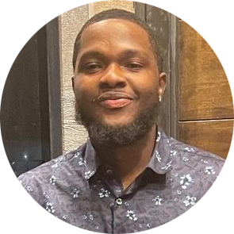

|  |
Ariyo Rapheal
Founder & CTO of '9Ariyo
Tech
I created this website to speak on my journey as a Full stack developer from scratch without no prior coding experience
|
My Education:
About Me
Nigerian Kid immigrated to the United States to pursue his basketball goals and, after a protracted absence, to live with his father. Aside from sports, I've always been the type of child who enjoys fixing things, and since I was a teenager,
everyone has called me an engineer. In 2018, when I was a student at Queens Borough Community College, I decided to follow in my father's footsteps and become a mechanical engineer. After taking a few different classes and developing an interest
in
computers after just one semester, I decided to change my major to computer engineering.
I transferred to a four-year university in 2020 after graduating at the top of my class to complete my bachelor's degree. I was open to many wonderful chances while attending school, including internships, the chance to work in the lab, and
offers
of assistance. However, same time, I concentrated on mastering computer engineering, which to me at the time meant mainly wires, networks,Installtions, and other manual labor. I obtained an internship with Metropolitan Transportation Authority
(MTA) as a cyber security engineer intern before to graduation.
I spent time setting up firewall policies and deploying switches. I discovered things that had to do with coding that fascinate me three months after I began conducting my own research on what I can do with my degree in computer engineering.As
part
of my internship program, I was given the chance to move to the application development department, where I worked on wonderful projects like displaying data visualizations with a streamlit web app using a python tool and having the chance to
work
on a train time application where I first encountered the react js programming language. I overworked myself for the first two months attempting to learn every programming language at once rather than focusing on one at a time. After some time,
I made the choice to enroll in a 62-hour class on becoming a full stack developer. I concentrated just on this as I practiced repeatedly until it made sense. Taking it day by day, which ultimately required more than 62 hours due to taking notes
and
practicing. I became proficient with it, started job seeking, and was hired by the MTA as an Application Developer Specialist Level 1 where I learnt a lot. I'm eager to work on additional projects and feel very proud of myself to be a part of
something that millions of people use every day.
Work Experience
| Dates |
Company |
Job |
| 2022 ~ Current |
Metropolitan Transportation Authority |
Application Developer Engineering Fellow |
| 2021 ~ 03/2022 |
SUNY Farmingdale |
IT Lab Technician |
Skills
| Python |
⭐⭐⭐⭐⭐ |
| SQL |
⭐⭐⭐⭐ |
| Java |
⭐⭐⭐⭐ |
| HTML |
⭐⭐⭐⭐⭐ |
| CSS |
⭐⭐⭐⭐⭐ |
|
| Software Testing |
⭐⭐⭐ |
| Advance Data Structure |
⭐⭐⭐⭐⭐ |
| Data Mining |
⭐⭐⭐⭐⭐ |
| C++ |
⭐⭐⭐ |
| Operating System |
⭐⭐⭐⭐⭐ |
|
My Hobbies
Contact Info